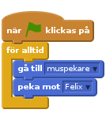
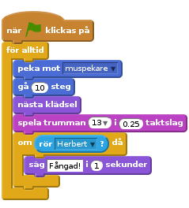
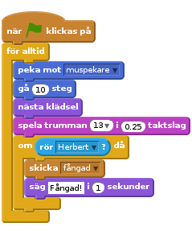
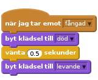

Introduktion
Vi ska skapa ett spel där katten Felix ska försöka ta musen Herbert. Du kontrollerar Herbert med muspekaren och försöker undvika att bli fångad av Felix. Ju längre du håller dig ifrån honom desto fler poäng får du, men se till att inte åka fast för då går poängen ner igen!
STEG 1: Felix följer muspekaren
Checklista
- Skapa ett nytt projekt.
- Klicka på Scen bredvid sprajten och byt till fliken Bakgrunder, importera sedan bakgrunden Inomhus/hall. Radera den ursprungliga tomma bakgrunden.
- Byt namn på sprajten till Felix.
- Se till att Felix bara pekar åt vänster-höger genom att klicka på den här knappen:
- Skapa följande skript:
![när @ klickas på
för alltid
peka mot [muspekare v]
gå (10) steg
nästa klädsel
spela trumman (13 v) i (0.25) taktslag](e42202133fef93d3586c46729705880fded2ce65.png)
Testa ditt projekt
Klicka på den gröna flaggan.
Följer Felix muspekaren? Ser det ut som att han går när han rör sig? Rör han sig i rätt hastighet?
Spara ditt projekt
STEG 2: Felix jagar Herbert
Nu vill vi att Felix ska jaga musen Herbert istället för muspekaren.
Checklista
- Skapa en ny sprajt genom att klicka på Välj ny sprajt från fil-knappen och välj Djur/mouse1.
- Byt namn på sprajten till Herbert.
- Byt klädsel och gör den mindre än Herbert.
Pröva med sex klick på Förminska-knappen: - Se till så att Herbert bara pekar åt vänster-höger.
- Ge Herbert det här skriptet:

Testa ditt projekt
Klicka på den gröna flaggan.
Rör sig Herbert med musmarkören? Jagar Felix Herbert?
Spara ditt projekt.
STEG 3: Felix säger till när han har fångat Herbert
Vi vill att Felix ska veta när han har fångat Herbert, och säga det till oss.
- Ändra Felix skript så det ser ut såhär:

Testa ditt projekt
Klicka på den gröna flaggan.
Säger Felix till när han har fångat Herbert?
Spara ditt projekt
STEG 4: Herbert blir ett spöke när han fångas
Istället för att Felix säger någonting så vill vi att Herbert ska förvandlas till ett spöke när han fångas.
Checklista
- Ändra i Felix skript så att det skickar ut följande meddelande när han fångar Herbert.

- Importera en ny klädsel till Herbert från Fantasy/ghost2-a.
- Redigera klädseln och gör den mindre.
Sex klick på Förminska-knappen borde räcka. - Byt namn på Herberts klädslar på musklädseln heter “levande” och spökkostymen heter “död”.
- Skapa ett nytt skript till Herbert för att förvandla honom till spöke:

Testa ditt projekt
Klicka på den gröna flaggan.
Blir Herbert ett spöke när han fångas?
Spelar Felix de rätta ljuden när han ska?
Står Felix still tillräckligt länge för att Herbert ska kunna ge sig iväg?
Spara ditt projekt
STEG 5: Räkna poäng
Nu lägger vi till ett poängsystem så vi vet hur bra vi är på att hålla Herbert vid liv.
Vi börjar med att låta poängen vara noll och höjer den med ett varje sekund. Om Felix fångar Herbert minskar vi poängen med tio.
Checklista
- Skapa en variabel som heter poäng för alla sprajter. Klicka på Variabler i toppmenyn, skapa en variabel och kalla den poäng.
- På scenen, skapa de här två skripten
![när @ klickas på
sätt [poäng v] till [0]
för alltid
ändra [poäng v] med (1)
vänta (1) sekunder
end
när jag tar emot [fångad v]
ändra [poäng v] med (-10)](0e4465bd001ffd04c8768583fbd764e629301fbb.png)
Testa ditt projekt
Klicka på den gröna flaggan.
Ökas pängen med ett varje sekund?
Minskas poängen med 10 när Herbert fångas?
Vad händer när Herbert fångas innan poängen har blivit tio? Nollställs poängen när du startar om spelet?
Spara ditt projekt
Bra jobbat, nu är du klar och kan spela spelet!
Glöm inte att du kan dela spelet med dina kompisar genom att klicka på Dela ut i menyn.